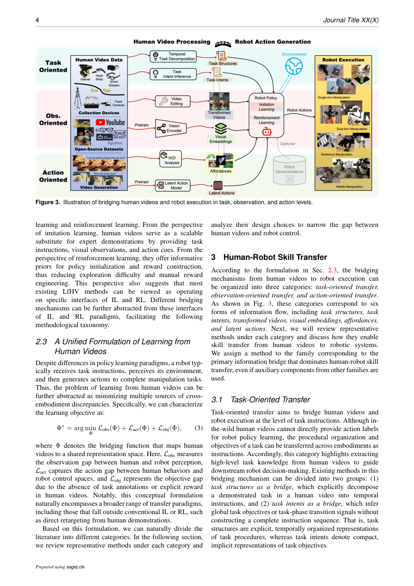

#1
★ 8/10
Robot Learning from Human Videos: A Survey
机器人从人类视频中学习：综述

图 Figure · Page 4 of paper
🎯 全面综述机器人从人类视频学习操作技能的方法与进展
A comprehensive survey on teaching robots manipulation skills by learning from human activity videos.
| 维度 | 中文 | English |
|---|---|---|
| ❓ 待解决 的问题 |
机器人训练数据难以大规模获取，是具身AI发展的核心瓶颈。人类活动视频在互联网上大量存在，包含丰富的操作技能，但机器人与人类存在外形和动作的巨大差异（embodiment gap），如何让机器人有效地从这些视频中学习是一大难题。 | Scaling robot training data is a critical bottleneck for embodied AI: collecting robot demonstrations is expensive, slow, and hard to generalize. Human activity videos, however, exist in massive quantities on the internet and capture a rich diversity of manipulation skills. The challenge is bridging the gap between human and robot embodiment so robots can actually learn from these videos. |
| 💡 解决 的亮点 |
- 提出层次化分类体系，将人类视频到机器人技能的迁移分为任务导向、观察导向、动作导向三大路径，逻辑清晰。 - 进行跨类别分析，系统梳理每种迁移路径与不同数据配置（如配对/非配对数据）及学习范式（RL、IL、生成模型）的耦合关系。 - 不仅覆盖技能迁移方法，还深入调研数据基础（数据集和视频生成），并提供数据集发展的大规模统计趋势。 | - Introduces a hierarchical taxonomy organizing human-video-to-robot-skill transfer into three pathways: task-oriented, observation-oriented, and action-oriented. - Provides a cross-family analysis linking each transfer pathway to different data configurations (e.g., paired vs. unpaired data) and learning paradigms (e.g., RL, IL, generative models). - Covers both the skill-transfer techniques and the data foundations (datasets + video generation), offering large-scale statistical trends in dataset development over time. |
| 🧪 实验 内容 |
本文是综述论文，没有新的实验。作者进行了大规模文献梳理和统计分析，汇总了现有人类视频数据集的发展趋势（数据规模、标注类型、任务覆盖范围），整理了各类方法所用的基准测试，并按仿真/真实环境、任务类型（如抓取、灵巧操作）对方法进行分类统计。 | As a survey paper, there are no new experiments conducted. Instead, the authors perform a large-scale literature review and statistical analysis of existing datasets and methods. They compile and analyze trends in human video dataset development and utilization (dataset sizes, annotation types, task coverage), catalog the benchmarks used across the surveyed works, and organize methods by their evaluated environments (simulated vs. real-world) and task types (e.g., pick-and-place, dexterous manipulation). |
| 📊 实验 结果 |
作为综述，本文无单一基准数字，但统计了如下趋势：可用人类视频数据集已达数十个（如EPIC-Kitchens、Something-Something、HOI4D、Assembly101），相关论文数量逐年大幅增长。综述覆盖100余种方法，涉及多个大规模数据集，涵盖数百万视频片段和数千小时人类活动视频。 | As a survey, no single benchmark result is reported by the authors themselves. However, the paper catalogues statistical trends: the field has seen rapid growth with dozens of human video datasets now available (e.g., EPIC-Kitchens, Something-Something, HOI4D, Assembly101), and the number of papers leveraging human videos for robot learning has grown substantially year-over-year. The survey covers 100+ methods and multiple large-scale datasets spanning millions of video clips and thousands of hours of human activity footage. |
| 🏁 结论 | 本综述构建了机器人从人类视频学习领域首个系统性、层次化的综合综述，将分散的研究纳入任务导向、观察导向和动作导向三大迁移路径的统一框架。它厘清了该领域的结构体系，点明了具身差异、数据对齐等核心挑战，并为未来可扩展的通用机器人系统研究指明了方向。 | This survey establishes the first comprehensive, hierarchically-organized review of robot learning from human videos, unifying scattered literature under a coherent taxonomy of task-, observation-, and action-oriented transfer pathways. It serves as a foundational reference that clarifies the field's structure, highlights key challenges such as the embodiment gap and data alignment, and charts concrete directions for future research toward scalable generalist robot systems. |
| 🔗 论文 链接 |
arXiv: 2604.27621v1 · 📥 PDF | |
⚙️ Method · 方法详解
本综述通过结构化的层次分类体系来组织现有工作。顶层将研究分为"人-机器人技能迁移"和"数据基础"两大板块。在技能迁移部分，区分三条路径：任务导向（用视频定义目标/奖励）、观察导向（对齐人类与机器人视角的视觉表征）和动作导向（直接从人类视频中提取或转换动作）。随后对每条路径与配对/非配对数据及RL、IL、生成模型等学习范式的耦合关系进行交叉分析。数据基础部分独立梳理了基准数据集和视频生成技术。
The survey organizes existing work through a structured, hierarchical taxonomy. At the top level, it separates "human-robot skill transfer" from "data foundations." Within skill transfer, it distinguishes three pathways: task-oriented (using videos to define goals/rewards), observation-oriented (aligning visual representations between human and robot views), and action-oriented (extracting or translating actions directly from human video). The survey then cross-analyzes how each pathway couples with paired or unpaired data and with learning paradigms such as reinforcement learning, imitation learning, and generative-model-based approaches. Data foundations are covered separately, reviewing benchmark datasets and video generation techniques used to augment robot training data.
🌟 Why It Matters · 为什么重要
机器人演示数据的稀缺是构建通用机器人的最大障碍之一，本综述系统梳理了利用互联网海量人类视频来突破这一瓶颈的全部解决方案空间。统一的分类体系和交叉分析为研究者提供了清晰的路线图，有助于减少这一快速增长领域中的重复工作。
The scarcity of large-scale robot demonstration data is one of the most pressing obstacles to building general-purpose robots; this survey maps out the entire solution space of using the internet's vast human video resources to overcome that bottleneck. By providing a unified taxonomy and cross-analysis, it gives researchers a clear roadmap and reduces duplicated effort across the fast-growing community.